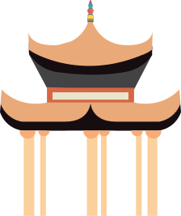
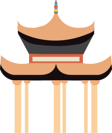

祭孔典礼在什么时候？
When is the Ceremony to Commemorate Confucius

1829
1948
2007
Twice a year, Spring and fall
Confucius's Birthday August 27th
It will also be played without the
ceremony
The ceremony started at 3 am and lasted about 2 hours
 



Dacheng Hall
Dancing Pavilion
Dancing Pavilion
Dacheng Gate
Drumming Pavilion
Drumming Pavilion
Liuyang Confucius Temple


Space layout